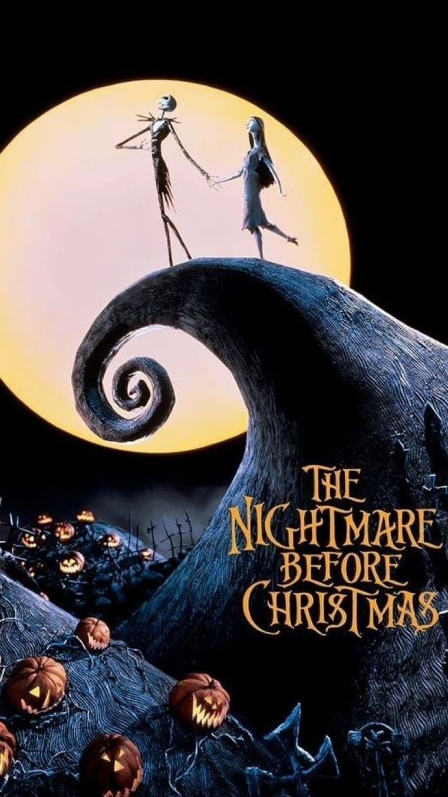
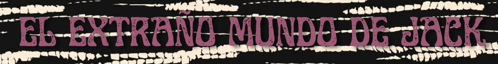

Ficha

Año: 1993 Duración: 76 minutos Dirección: Henry Selick Historia y personajes: Tim Burton Guion: Caroline Thompson Producción: Tim Burton y Denise Di Novi Género: Stop motion · Fantasía · Musical · Terror Música: Danny Elfman


Año: 1993 Duración: 76 minutos Dirección: Henry Selick Historia y personajes: Tim Burton Guion: Caroline Thompson Producción: Tim Burton y Denise Di Novi Género: Stop motion · Fantasía · Musical · Terror Música: Danny Elfman
Jack Skellington es el Rey Calabaza y la figura más importante de Ciudad Halloween. Después de años celebrando Halloween, comienza a sentirse cansado de repetir siempre la misma rutina. Un día, Jack descubre accidentalmente Ciudad Navidad y queda fascinado con sus luces, colores y espíritu festivo. Decide entonces intentar organizar su propia versión de la Navidad, aunque no comprende realmente cómo funciona ese mundo. Con la ayuda de Sally y de los habitantes de Ciudad Halloween, Jack intenta reemplazar a Santa Claus y llevar la Navidad a su propio universo. Pero sus buenas intenciones terminan provocando una serie de situaciones caóticas que ponen en peligro la celebración navideña. La historia gira alrededor de la identidad, la curiosidad y el deseo de encontrar algo nuevo sin dejar de ser quien uno es.
El Rey Calabaza de Ciudad Halloween. Está cansado de hacer siempre lo mismo y busca una nueva forma de sentirse inspirado.
Una muñeca de trapo creada por el Dr. Finkelstein. Es sensible, inteligente y percibe desde el comienzo que el plan de Jack puede salir mal.
El principal antagonista. Es una criatura hecha de tela y llena de insectos que disfruta del peligro, los juegos y las apuestas.
El excéntrico alcalde de Ciudad Halloween. Tiene dos caras y cambia constantemente de expresión según su estado de ánimo.
Tres pequeños habitantes de Halloween que trabajan para Oogie Boogie y participan en el plan de Jack.
Dirección: Henry Selick Historia y personajes: Tim Burton Guion: Caroline Thompson Producción: Tim Burton y Denise Di Novi Música: Danny Elfman Voces principales: Danny Elfman — Jack en las canciones Chris Sarandon — Jack en los diálogos Catherine O'Hara — Sally Ken Page — Oogie Boogie William Hickey — Dr. Finkelstein Glenn Shadix — Alcalde
La película fue realizada completamente mediante stop motion, utilizando personajes y escenarios físicos que debían ser modificados y fotografiados una y otra vez para crear la ilusión de movimiento. La producción comenzó en 1991 y llegó a trabajar simultáneamente con numerosos sets y equipos de animación. Durante el proceso se registraron más de 100.000 fotogramas para construir los 76 minutos de película. La estética combina influencias del expresionismo alemán, el terror clásico, las ilustraciones góticas y el particular diseño de personajes asociado a Burton.
Aunque Tim Burton creó la historia y los personajes, Henry Selick fue quien dirigió la película.
Chris Sarandon interpreta los diálogos de Jack, mientras que Danny Elfman canta sus canciones
La película necesitó decenas de sets y un enorme equipo de animadores trabajando durante años.
Uno de los recursos visuales más importantes de la película es el contraste entre Ciudad Halloween y Ciudad Navidad: oscuridad y formas retorcidas frente a colores, luces y formas más suaves.
PALETA Negro, gris, blanco, naranja, rojo y verde. ESTÉTICA Gótica, expresionista, fantástica y caricaturesca. PERSONAJES Cuerpos extremadamente delgados, extremidades alargadas y proporciones exageradas. ESCENARIOS Arquitectura torcida, cementerios, árboles retorcidos y paisajes imposibles. ILUMINACIÓN Contrastes fuertes y sombras profundas. REFERENCIAS Halloween · Navidad · Expresionismo alemán · Cine de terror · Ilustración gótica.